library (tidyverse)
library (gt)6 Visualização de Dados com GGPLOT2
6.1 Introdução
A seguir temos vários exemplos de visualização de dados utilizando o pacote GGPLOT2 do R.
Nota
Apesar de visualização de dados não ser especificamente parte das etapas de transformação e manipulação de dados, acreditamos ser importante um conhecimento básico sobre o tema, pois muitas vezes, para explicarmos aquilo que estamos transformando ou manipulando, o fazemos de forma gráfica para melhor compreensão.
O objetivo não é explicar a aplicabilidade e/ou o a função de cada gráfico, mas sim, como ele pode ser construído.
Para saber mais sobre este pacote, acesse:
https://cran.r-project.org/package=ggplot2.
Aviso
Para melhor utilizar este material, é importante que você tenha uma introdução à linguagem R e saiba carregar pacotes (packages) no R. Para mais informações acesse:
Para os exemplos, iremos carregar os seguintes pacotes:
tidyverse
gt
6.1.1 Exemplos da Folha de Referência
A maioria dos exemplos, visam ajudar na interpretação dos exemplos e funções encontradas na Folha de Referência do stringr disponível no site do RStudio.
6.2 Tipos de Variáveis
Não é intuito deste tópico aprofundar neste tema, porém como a natureza de cada gráfico pode estar relacionada ao tipo de variável que ele irá representar, vamos rever de forma resumida os tipos de variáveis no contexto de análise de dados.
Este conhecimento é importante, pois iremos nos referir a eles, principalmente quando tratarmos das funções de Geometrias (geoms).
Podemos categorizar as variáveis em Qualitativas ou Quantitativas. (Fávero 2021)
6.2.0.1 Qualitativas
Representam as características de um indivíduo, objeto ou elemento que não podem ser medidas ou quantificadas.
As variáveis qualitativas, também poder ser classificadas em função do número de categorias em:
Dicotômica ou Binária: Apenas duas categorias.
Policotômica: Mais que duas categorias.
Ou em função da escala de mensuração em:
Nominal: As unidades são classificadas em categorias em relação à características representadas. Sem ordem ou relação entre si. (ex: sexo)
Ordinal: As unidades são classificadas em categorias em relação à características representadas. Há uma ordem ou relação entre si. (ex: grau de escolaridade)
Nota
Tipicamente, um dado qualitativo em natureza representa valores discretos que pertencem a um conjunto finito de classes. Estes valores discretos podem ser representados através de um número ou textos.
Em geral, variáveis qualitativas são representadas no R com o tipo fatores “factors”.
6.2.0.2 Quantitativas
Representam as características de um indivíduo, objeto ou elemento resultantes de uma contagem ou mensuração.
As variáveis quantitativas, também podem ser classificadas em função da escala de precisão.
Discreta: Assumem conjunto finito de valores, frequentemente de uma contagem (ex: número de filhos, quantidade de carros, etc)
Contínua: Assumem conjunto infinito de valores, frequentemente com resultado de uma mensuração (ex: peso, altura, salário, etc)
Ou em função da escala de mensuração em:
Intervalar: As unidades são ordenadas em relação à características mensurada e possui um unidade de constante. A origem, ou ponto zero, não expressa ausência de quantidade. (ex: temperatura)
Razão: As unidades são ordenadas em relação à características mensurada e possui um unidade de constante. A origem, ou ponto zero, é única e expressa ausência de quantidade.(ex: temperatura)
Cuidado
Vale lembrar que nem sempre uma variável representada por um número é quantitativa. O número da carteira de identidade é um exemplo disso. Apesar dos números ela é uma variável qualitativa.
Nota
O ggplot2, em geral irá tratar as variáveis caractere (char) e fatores (factors) em escalas discretas. Já as variáveis numéricas com escalas contínuas. A separação nas seções adiante, seguem estas definições para segregar os tipos de gráficos e escalas. Quando tivermos variáveis que não seguem este padrão, devemos “transformá-las, usando funções como as_factor(), as.integer(), as.double, etc.
6.3 Gramática dos Gráficos
O pacote ggplot2 é uma implementação do livro “Grammar of Graphics”, que apresenta um conceito de quais seriam os elementos de um gráfico e suas interconexões. O modelo teórico proposto no livro é que através de camadas definidas qualquer gráfico pode ser construído. Abaixo o modelo, que deve ser interpretado de baixo para cima.
De uma forma bem resumida, a idéia é que você possa construir qualquer gráfico com base nestes mesmos elementos: um conjunto de dados, um sistema de coordenadas e geoms, que seriam marcas visuais que representas os pontos dos dados.

No caso do ggplot2, para mostrar valores no gráfico, as varíaveis do conjunto de dados são mapeadas em propriedadas visuais da geometria (geom).
Este mapeamento de estética (aesthetic) é feito através da função aes() e podemos fazer mapeamentos estéticos como cor ou tamanho.

6.4 Modelo para Construção de um Gráfico
No caso do ggplot2, podemos definir uma espécie de modelo (template) para a sintaxe de construção de gráficos:

6.4.0.1 ggplot
A função ggplot() inicia um gráfico que será completado com as camadas adicionadas na sequência. Adicione uma geometria (geom) para cada camada.
Usando o modelo anterior e o que vimos até aqui, vamos gerar nosso primeiro gráfico. Como base de dados usaremos a tabela mtcars. Para maiores informação sobre as colunas e dados do mtcars, digite ?mtcars.
mtcarsggplot(data = mtcars) +
geom_point (mapping = aes(x = hp, y = mpg ))
Nota
Observe que mesmo sem definirmos escalas, temas, estatísticas ou outras camadas, o gráfico ainda assim foi gerado. Isto é porque o ggplot tem valores padrões dinâmicos que tentam prover o melhor resultado possível com o mínimo de esforço.
Dica
A definição da estética com seu mapeamento, feito neste exemplo na função de geometria (geom_point) poderá ser feito também na função ggplot().
Apesar do gráfico final ser similar, a estética mapeamento poderá ser utilizada pelas funções geom_*() nas camadas seguintes, sem a necessidade de repetí-la, caso contrário, ela será restrito apenas àquela geom() na qual foi declarada. Veja:
ggplot(data = mtcars, mapping = aes(x = hp, y = mpg))+
geom_point()
Por ser comum o uso do argumento data = e mapping =, podemos excluídas do código, deixando-o mais enxuto, porém mais difícil para quem não tem tanta familiaridade, veja:
ggplot(mtcars,aes(x = hp, y = mpg)) +
geom_point()
6.4.0.2 last_plot
Use para retornar o último gráfico gerado.
last_plot()
6.4.0.3 ggsave
Use para salvar o gráfico em uma imagem. O tipo de imagem é selecionado pela extensão do arquivo de saída.
Por exemplo, para salvar o diretório atual um arquivo com o gráfico chamado “plot-01.png” com o formato de imagem “.PNG” de tamanho 5x5 centímetros, fazemos:
ggsave("plot-01.png", width = 5, height = 5, units = "cm")6.5 Estética (aes)
Cada estética possui valores padrões que serão usados por determinada função de geometria ou de estatística. Mas existem valores que são comuns a quase todas as geom/stat(), a seguir veremos alguns deles:
6.5.0.1 color e fill
Use para definir a cor (color) ou preenchimento (fill) para a estética.
ggplot(mtcars)+
geom_point(aes(x = hp, y = mpg, color = "red"))
Na string de color =, podemos usar valores de cores em inglês, como “red” ou “blue”, ou também códigos RGB, como ““#00ABFF” ou “FF00AA”.
Importante
Observe que o valor definido da cor, dentro fora dos parênteses da função aes(), ou seja, ela está fazendo o mapeamento da cor com os dados. Se utilizarmos o argumento color = da função geom_point(),estaremos definindo um valor fora do mapeamento.
ggplot(mtcars)+
geom_point(aes(x = hp, y = mpg) , color = "red")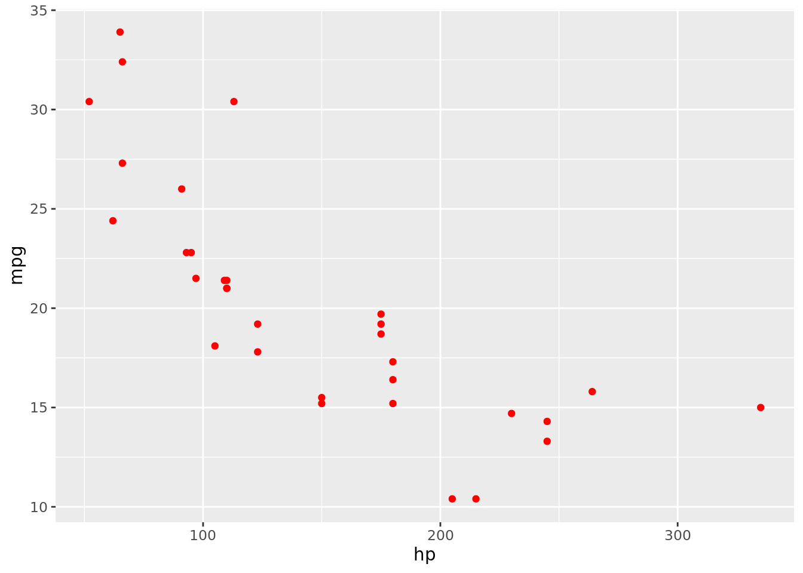
Apesar do resultado ser similar, observe que no exemplo anterior tivemos color como um mapeamento da estética, como definimos o valor fixo com a cor “red”, seria como tivessemos em nossos dados uma coluna onde todas as linhas tivessem o valor “red”. Já no exemplo acima, estamos simplemente dizendo à função da geometria que queremos a cor vermelha para ela.
Vejamos um outro exemplo para que fique claro este ponto. Vamos gerar o mesmo gráfico onde colocamos “red” como parte da estética, porém agora, iremos mapeá-la com a coluna “qsec” de nossos dados mtcars:
ggplot(mtcars)+
geom_point(aes(x = hp, y = mpg, color = qsec))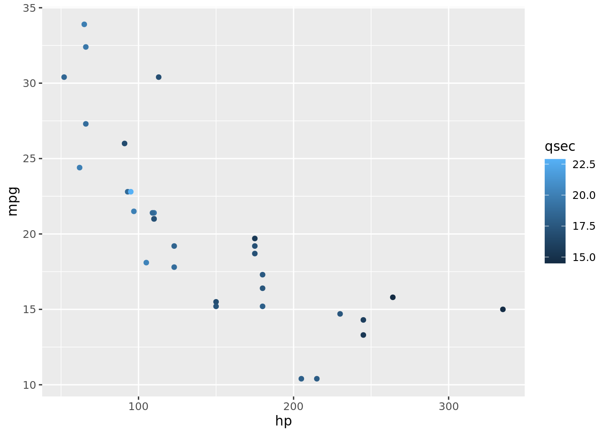
6.5.0.2 linetype
Use para definir a linha utilizada no gráfico. Podemos utilizar um número de 0 a 6 ou um nome:
(0 = “blank”, 1 = “solid”, 2 = “dashed”, 3 = “dotted”, 4 = “dotdash”, 5 = “longdash”,6 = “twodash”)
Por exemplo, ao invés de utilizarmos a geometria de pontos (geom_point), vamos utilzar a geometria de linha (geom_line):
ggplot(mtcars)+
geom_line(aes(x = hp, y = mpg) , linetype = "dotted")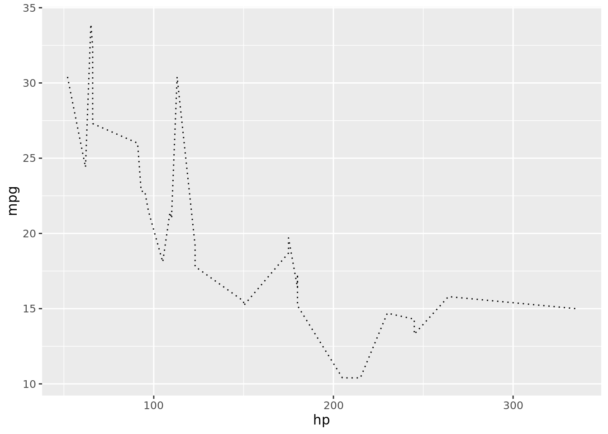
6.5.0.3 size
Use para definir o tamanho, no caso de uma linha em “mm”.
Como dito anteriormente, estes valores são comuns para vários geometrias. Por exemplo, podemos utilizar o argumento size também na geometria de pontos (geom_point):
ggplot(mtcars)+
geom_line(aes(x = hp, y = mpg), size = 5)
ggplot(mtcars)+
geom_point(aes(x = hp, y = mpg), size = 5)

6.5.0.4 lineend
Use para definir o terminador da linha. Os valores podem ser: round, butt e square.
ggplot(mtcars)+
geom_line(aes(x = hp, y = mpg), lineend = "square", size = 4)
ggplot(mtcars)+
geom_line(aes(x = hp, y = mpg), lineend = "butt", size = 4)
ggplot(mtcars)+
geom_line(aes(x = hp, y = mpg), lineend = "round", size = 4)
6.5.0.5 linejoin
Use para definir a junção da linha. Os valores podem ser: round, mitre e bevel.
ggplot(mtcars)+
geom_line(aes(x = hp, y = mpg), linejoin = "round", size = 4)
ggplot(mtcars)+
geom_line(aes(x = hp, y = mpg), linejoin = "mitre", size = 4)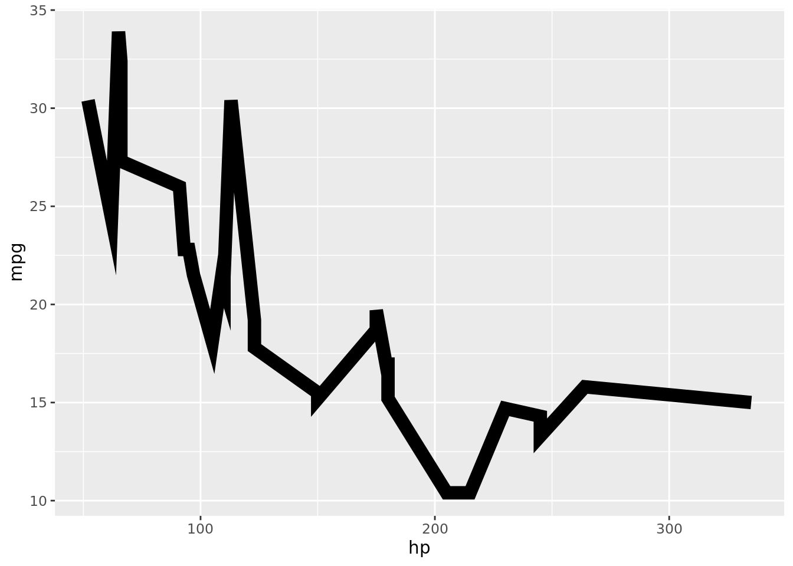
ggplot(mtcars)+
geom_line(aes(x = hp, y = mpg), linejoin = "bevel", size = 4)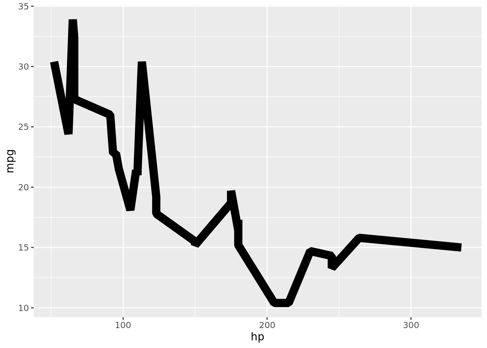
6.5.0.6 shape
Use para definir a forma. Podemos passar um número ou um nome em inglês da forma conforme abaixo:

ggplot(mtcars)+
geom_point(aes(x = hp, y = mpg), shape = "square cross", size = 3)
ggplot(mtcars)+
geom_point(aes(x = hp, y = mpg), shape = 5, size = 3)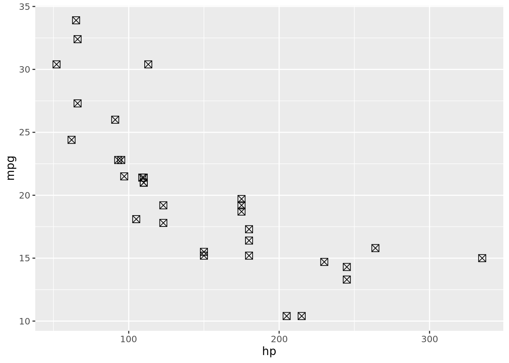

6.6 Geometrias (geoms)
Use as funções de geometria para representar os pontos de dados. Use as estéticas das geometrias para representar as variáveis.
Aviso
Lembre-se que cada função retornará uma camada, portanto, a ordem de criação das camadas afeta o resultado do gráfico, pois uma será criada sobre a anterior.
6.6.1 Gráficos Primitivos
Para os exemplos a seguir, utilizaremos duas bases de dados, uma chamada economics e outra chamada seals.
economicssealsPara simplificar o código dos próximos exemplos, iremos criar dois objetos gráfico do ggplot:
O primeiro chamado “a”, irá conter um objeto ggplot com os dados de economics, mapeando a estética de x para a variável “date” e y para a variável “unemployed”.
O segundo chamado “b”, irá conter um objeto ggplot com os dados de seals, mapeando a estética de x para a variável “long” e y para a variável “lat”.
Desta forma trabalharemos com os mesmos objetos base e adicionaremos apenas novas camadas afim de identificar os detalhes das diversas funções de geometria.
a <- ggplot(economics, aes(date, unemploy))
b <- ggplot(seals, aes(x = long, y = lat))
Nota
Para simplificar o código, em algum momentos podemos omitir o argumento, como data=, mapping = , x = , y = . Isto porque já estamos os valores na ordem da função.
Agora com os objetos inicialmente criados, iremos adicionar novas camadas afim de obtermos os gráficos e entendermos algumas das funções de geometria para gráficos primitivos.
6.6.1.1 geom_blank
Use para garantir limites para todos os gráficos de acordo com os dados.
a + geom_blank()
Dica
Use a função expand_limits() para expandir os limites do gráfico usando dados. Ver ?expand_limits para mais detalhes.
6.6.1.2 geom_curve
Use para criar curvas.
b + geom_curve(aes(yend = lat + 1, xend = long + 1), curvature = 1)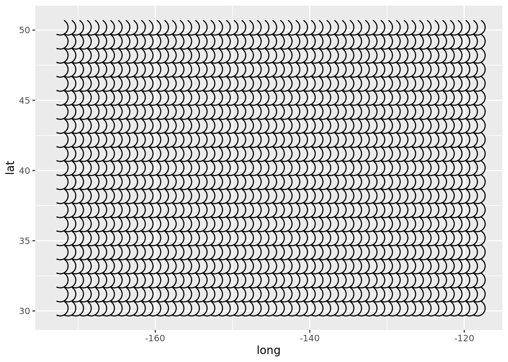
6.6.1.3 geom_path
Use para conectar observações.
a + geom_path(lineend = "butt", linejoin = "round", linemitre = 1)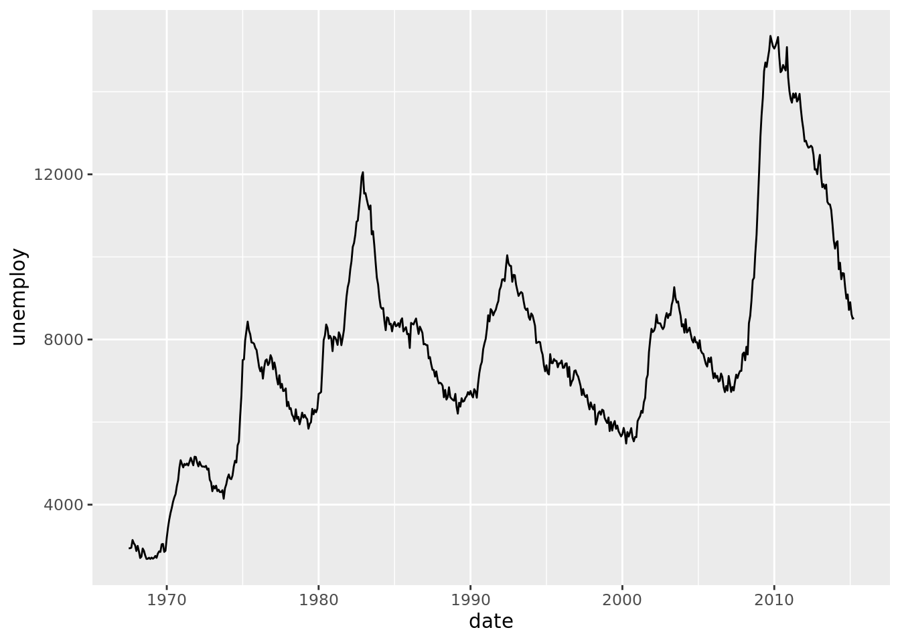
6.6.1.4 geom_polygon
Use para criar poligonos. É similar a geom_path(), porém a parte interna é preenchida com argumento fill =.
a + geom_polygon(aes(alpha = 50))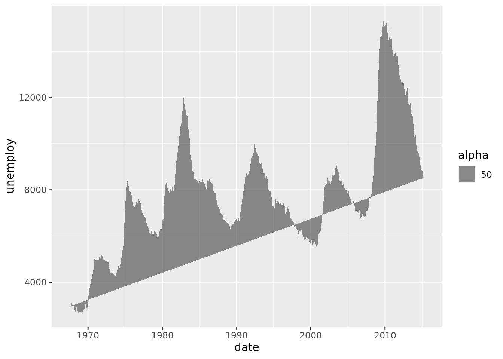
Nota
O argumento alpha = , é muito comum na definição de cores. De maneira simplificada, ele indica o nível de transparência de uma cor, sendo 0, nenhuma transparência e 1 transparência total.
6.6.1.5 geom_rect
Use para criar retângulos.
b + geom_rect(aes(xmin = long, ymin = lat,
xmax = long + 1, ymax = lat + 1))
Nota
A função geom_title() fazem a mesma coisa, porém são parametrizadas de forma diferente. A geom_rect usa a localização dos 4 cantos do quadrado, enquanto a geom_tile usa o centro e seu tamanho (largura e altura) para dimensionar.
6.6.1.6 geom_ribbon
Use para criar uma “fita”. Para cada valor de x, ela mostra um intervalo y, definido por ymin e ymax. Veja que geom_area() é um caso especial do geom_ribbon(), onde o ymin é fixo em 0 e y é usado no lugar de ymax.
a + geom_ribbon (aes(ymin = unemploy - 900,
ymax = unemploy + 900))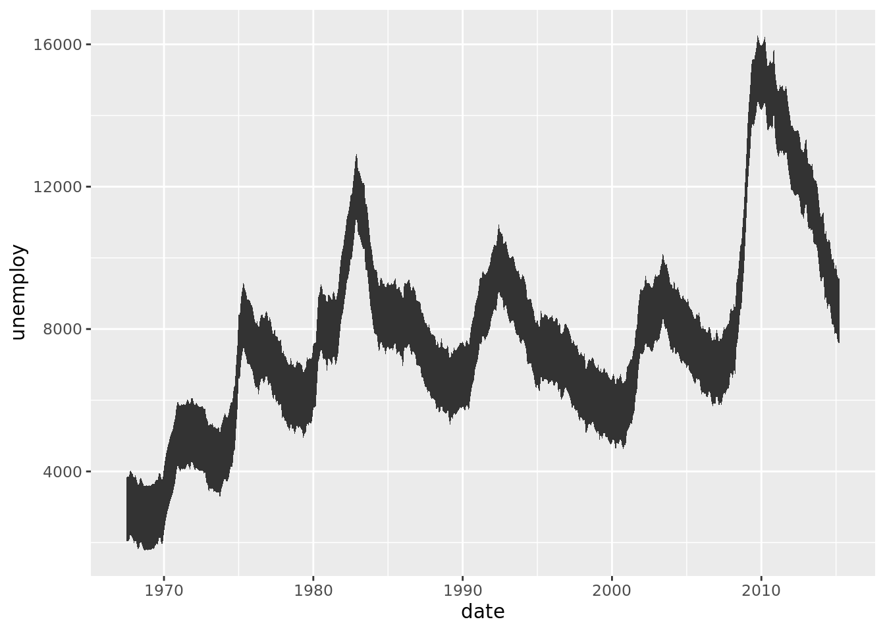
6.6.2 Segmentos de Linhas
Estas funções de geometrias, permitem criar diversos tipo de segmentos de linha e são úteis quando precisamos “marcar” ou definir algo no gráfico, com linhas verticais ou horizontais por exemplo.
6.6.2.1 geom_abline
Use para criar uma linha de um ponto “a” até um ponto “b”, passando o intercepto e a inclinação da reta.
b + geom_abline(aes(intercept = 0, slope = 1))
6.6.2.2 geom_hline
Use para criar uma ou mais linhas horizontais.
b + geom_hline(aes(yintercept = lat))
Veja que no exemplo anterior, fizemos o mapeamento do argumento yintercept como parte da estética (aes), mapeando este argumento com a variável “lat” de nossos dados.
Se quisermos simplesmente traçar uma linha com o intercepto do eixo y, correspondendo ao valor 40 (por exemplo, se fosse um tipo de meta), podemos definir este valor fora do mapeamento:
b + geom_hline(yintercept = 40)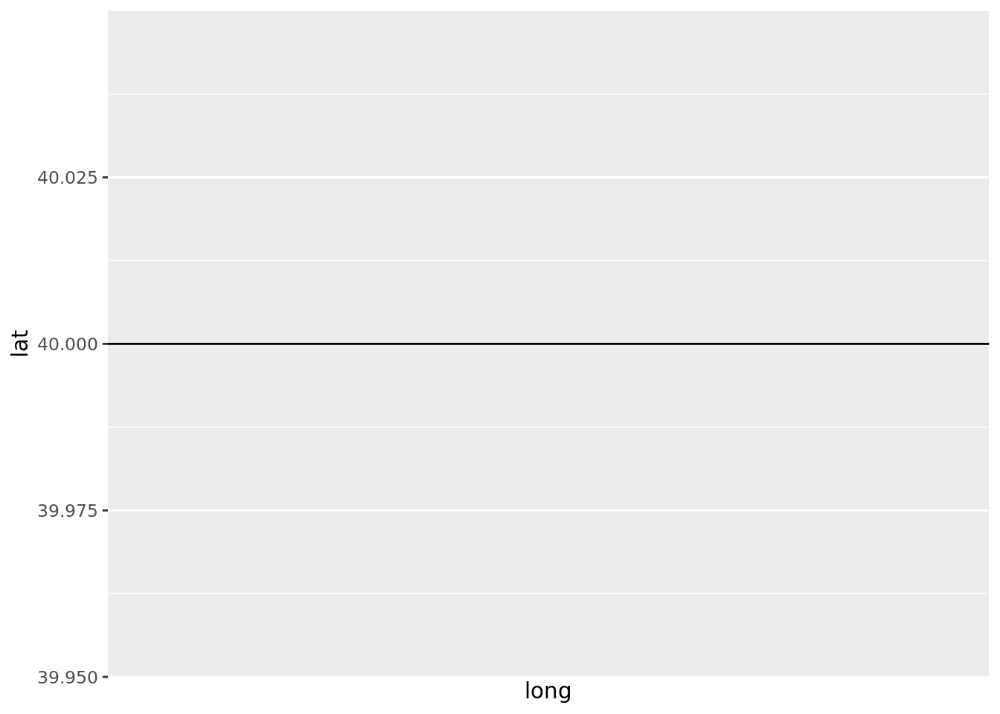
6.6.2.3 geom_vline
Use para criar uma ou mais linhas horizontais.
b + geom_vline(aes(xintercept = long))
6.6.2.4 geom_segment
É similar ao geom_curve, porém ao invés de criar uma curva, criar um segmento de reta.
b + geom_segment(aes(yend = lat + 1, xend = long + 1))
6.6.2.5 geom_spoke
Use para criar um segmento, parametrizado pela localização, direção e distância.
b + geom_spoke(aes(angle = 1:1155, radius = 1))
6.6.3 Uma Variável Contínua
Quando precisamos analisar um varíavel contínua, as geometrias a seguir ajudam a fornecer um gráfico apropriado.
Novamente, iremos preparar nossos objetos básicos para evitar repetição de código. Agora teremos um objeto “c” e outro “c2”, aos quais iremos adicionar novas camadas. Similar ao que fizemos anteriormente, porém agora utilizaremos a base de dados “mpg”.
mpgCriando os objetos ggplot:
c <- ggplot(mpg, aes(hwy))
c2 <- ggplot(mpg)
Importante
Observe que o objeto “c”, usa a base “mpg” já atribuindo a variável “hwy” para x= da estética. Esta configuração será aplicada para qualquer funções geom_*() a não ser que explicitamente tenhamos uma estética redefinindo isso dentro de outra camanda de geometria.
Já para o objeto “c2”, não temos a estética de x definida, portanto, teremos que definí-la em nas próximas camadas com a funções de geometria (geom_*()).
6.6.3.1 geom_histogram
Use para criar histogramas, ou seja, uma forma de visualizar uma variável contínua dividindo no eixo x em classes e contando o número de observações de cada classe no eixo y.
O argumento binwidth = define o tamanho das classes.
No exemplo a seguir, dividimos a variável contínua de consumo por rodagem (hwy) em classes com 2 observações cada.
c + geom_histogram(binwidth = 2) 
Se desejar definir o número de classes ao invés de quantas observações terão cada classe, utilize o argumento bins =.
c + geom_histogram(bins = 16) 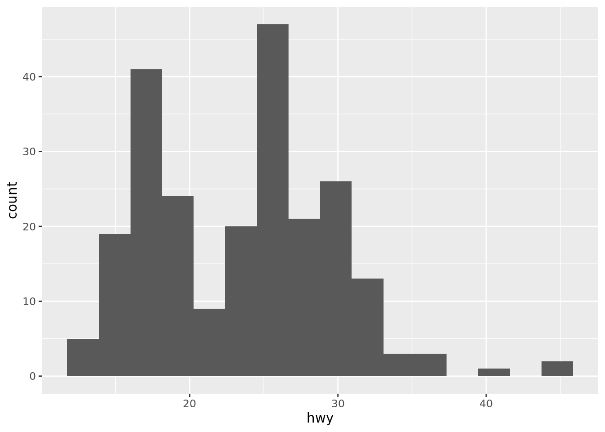
6.6.3.2 geom_freqpoly
Use para gerar um gráfico de polígonos de frequência. Enquanto o histograma gera um gráfico de barras, esta geometria gera uma linha.
c + geom_freqpoly(bins = 30)
6.6.3.3 geom_area
Use para criar um gráfico de área, onde para cada valor no eixo x, há um valor y máximo e o valor de y mínimo é sempre zero.
Nota
Você verá um argument (stat = “bin”) abaixo. Veremos as estatísticas na seção ESTATÍSTICAS (STATS). Por hora, pense apenas que é uma forma de definirmos os valores que iremos mostrar para o eixo y. Por padrão o número de agrupamento (bin) é 30.
c + geom_area(stat = "bin", bins = 32)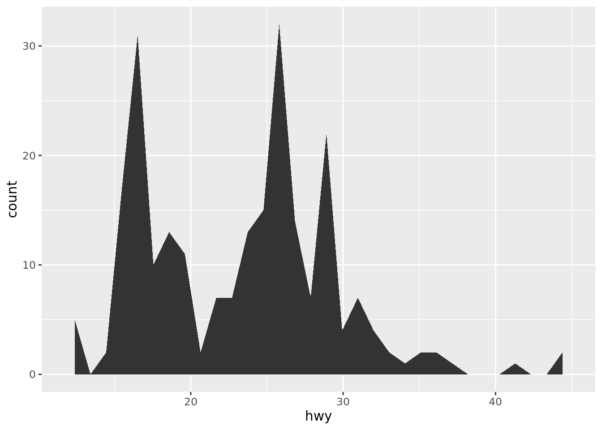
6.6.3.4 geom_density
Use para fazer um gráfico de densidade. Usando funções de estimativa de densidade de kernel, seria uma versão mais “arredondada” do histogram, mostrando a função densidade de probabilidade da variável.
Há a possibilidade de configurar vários kernels das funções de densidade, como “gaussian”, “rectangular”, “triangular”, “epanechnikov”, “biweight”, “cosine” ou “optcosine”.
c + geom_density(kernel = "gaussian")
Dica
Veja que podemos criar duas geometrias, uma com o histograma e outra de densidade sobrepostas. Para isto temos que sobreescrever a estética definida previamente para o eixo y (antes era count) usando ..density..
c + geom_histogram(aes(y = ..density..)) +
geom_density()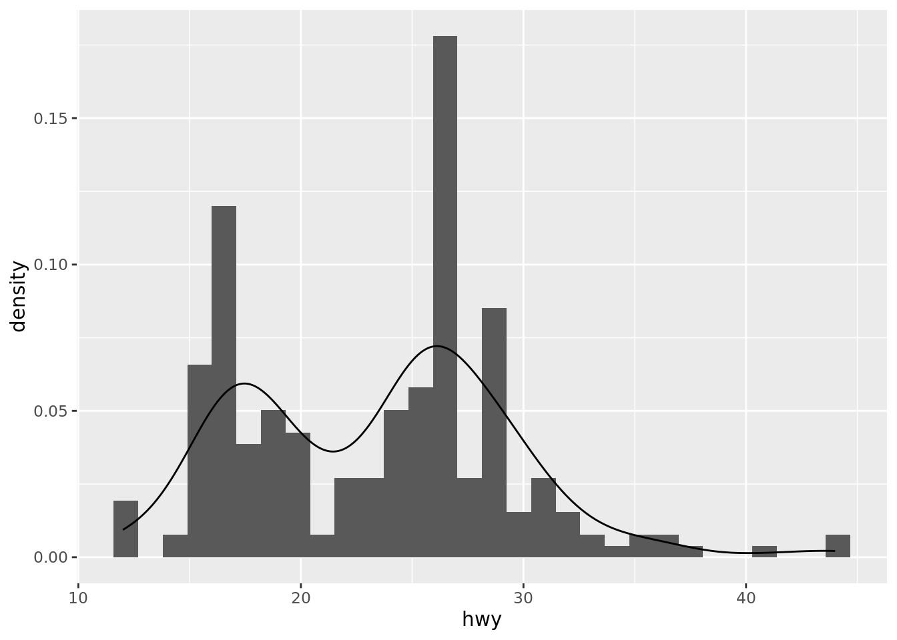
6.6.3.5 geom_dotplot
Use para criar um gráfico de pontos, com a largura dos pontos correspondem à largura do agrupamento e os pontos são empilhados. Cada ponto corresponde à uma observação dos dados, portanto em geral é utilizado quando temos poucas observações.
c + geom_dotplot() 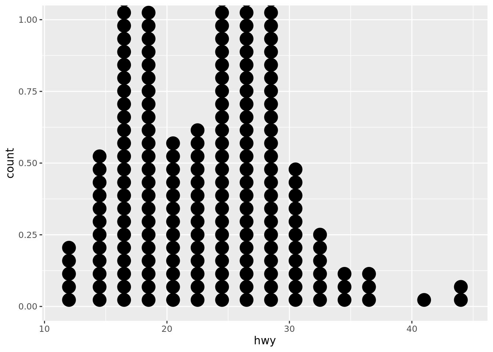
6.6.3.6 geom_qq
Use para criar um gráfico de quantil-quantil. Em geral utilizado para confirmar se uma variável tem uma distribuição gaussiana.
c2 + geom_qq(aes(sample = hwy))
6.6.4 Uma Variável Discreta
Quando precisamos analisar um varíavel discreta, as geometrias a seguir ajudam a fornecer um gráfico apropriado.
Novamente, iremos preparar nosso objeto básico para evitar repetição de código. Agora teremos um objeto “d” ao qual iremos adicionar novas camadas. Similar ao que fizemos anteriormente usando a base de dados mpg. Utilizaremos a variável combustível (fl).
d <- ggplot(mpg, aes(fl))6.6.4.1 geom_bar
Use para criar um gráfico de barras.
d + geom_bar()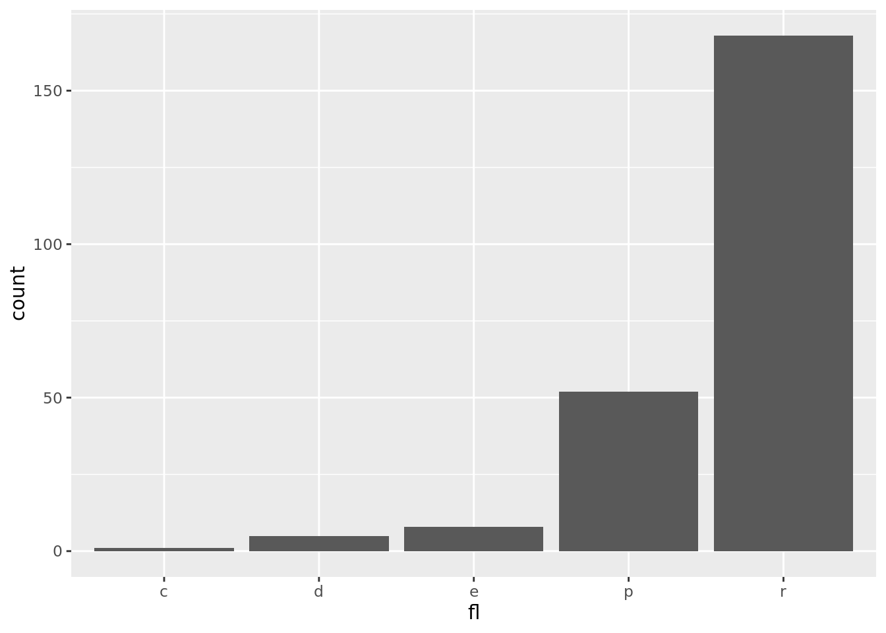
Veja outro exemplo: Como aconteceu com o combustível (fl), podemos pegar a variável tipo da classe do veículo (class) e gerar um gráfico de barras também.
d + geom_bar(aes(x = class))
Usando o argumento da estética para cor do preenchimento (fill), podemos mapear uma variável igual ou diferente. Com isto, o ggplot automaticamente criará uma legenda para os diferentes valores da varíavel. Veja o que acontece quando temos x=fl e fill = class:
d + geom_bar(aes(fill =class))
Note que como a estética herdada do objeto ggplot base (d) tinha o mapeamento de x para a variável combustível (fl), ela ainda permanece no eixo x.
Se sobrescrevermos este mapeamento para a estética do geom_bar com a mesma variável para x e fill, teremos:
d + geom_bar (aes(x = class, fill = class)) 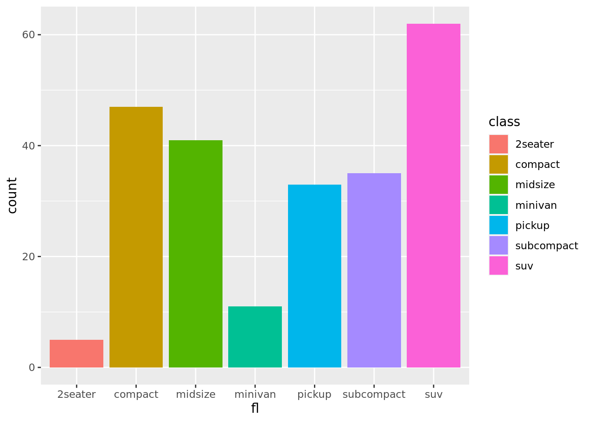
Note que o resultado automático do gráfico foi um pouco diferente. Quando tivemos x = fl e fill = class as barras foram empilhadas (stack) e quando tivemos x = class e fill = class, as barras foram lado colocadas lado a lado (dogde).
Por padrão, o ggplot, quando múltiplas barras ocupam o mesmo ponto, elas são empilhadas. Este comportamento pode ser definido através do argumento position = .
Veja as diferentes opções:
d + geom_bar(aes(fill =class), position = "dodge")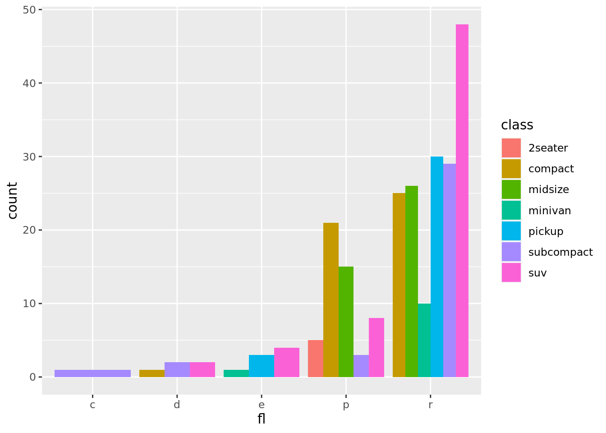
d + geom_bar(aes(fill =class), position = "dodge2")
d + geom_bar(aes(fill = class) , position = "stack")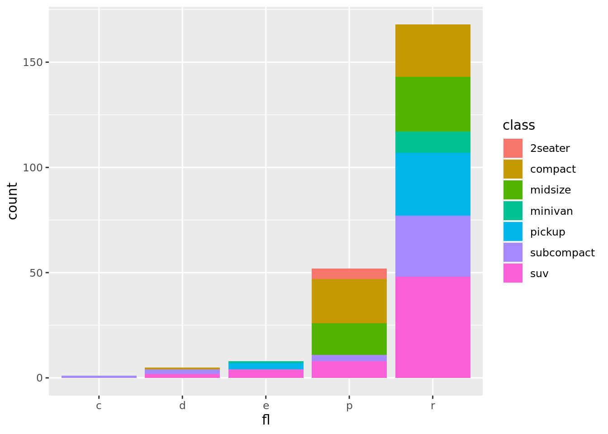
d + geom_bar(aes(fill =class), position = "fill")
Dica
As geometrias podem ter valores calculados autometicamente “computed variables”. Isto é para faciliar a geração dos gráficos com valores padrões. No caso da geom_bar, não precisamos passar que no eixo y gostaríamos de ter a contagem da variável que está no eixo x. Veja que então, a variável y não ficou sem um valor, ele apenas foi substituído pela contagem (count) automaticamente. A geom_bar tem “count” e “prop” como varíveis computadas.
Para saber quais varíaveis são computadas automaticamente para cada geometria, veja a ajuda com ?geom_bar.
6.6.5 Duas Variáveis Discretas
Quando precisamos analisar um duas varáveis discretas, as geometrias a seguir ajudam a fornecer um gráfico apropriado.
Novamente, iremos preparar nosso objeto básico para evitar repetição de código. Agora teremos um objeto “g” ao qual iremos adicionar novas camadas. Similar ao que fizemos anteriormente, só que agora usando a base de dados diamonds. Utilizaremos as variáveis corte (cut) e cor (color).
g <- ggplot(diamonds, aes(cut, color))6.6.5.1 geom_count
Esta é uma variante do geom_point() que conta o número de observação em cada localização e então mapeia a contagem na área do ponto.
g + geom_count()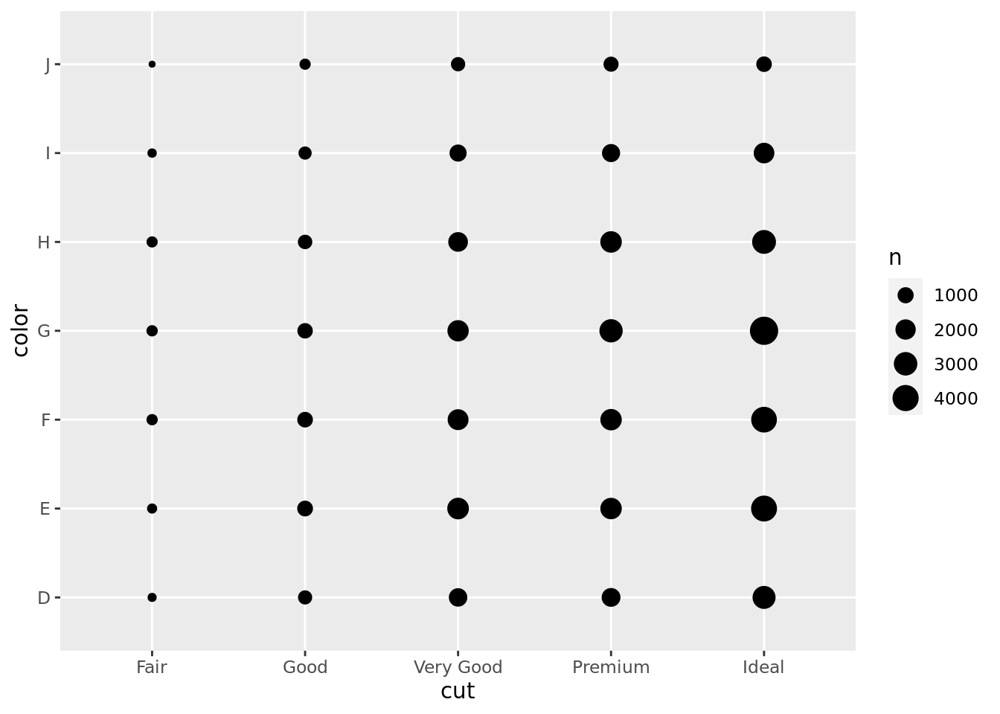
6.6.5.2 geom_jitter
É similar ao geom_point, porém adiciona uma variação aleatória em cada ponto.
g + geom_jitter(height = 2, width = 2)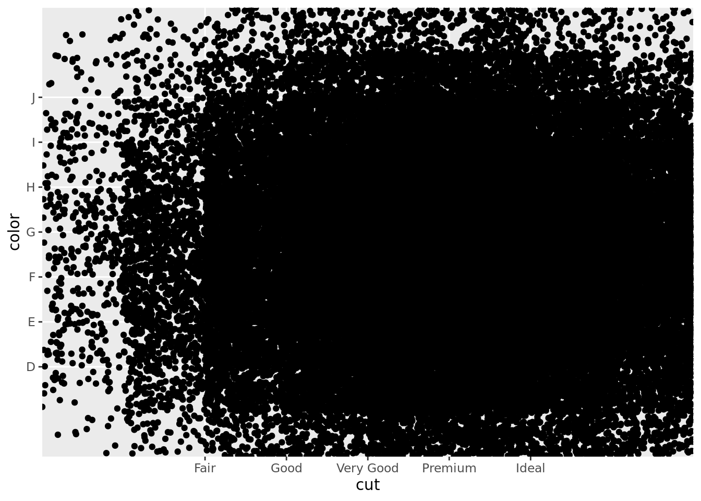
Como várias outras geometrias, podemos adicionar uma cor na estética do geom_jitter, mapeando outra váriável, como por exemplo o corte (cut) para facilitar a visualização:
g + geom_jitter(aes(color = cut), height = 2, width = 2)
6.6.6 Uma Variável Contínua e Outra Discreta
Quando precisamos analisar uma varável contínua e outra discreta, as geometrias a seguir ajudam a fornecer um gráfico apropriado.
Novamente, iremos preparar nosso objeto básico para evitar repetição de código. Agora teremos um objeto “f” ao qual iremos adicionar novas camadas. Similar ao que fizemos anteriormente, só que agora usando a base de dados mpg. Utilizaremos as variáveis classe (class) e consumo na estrada (hwy).
f <- ggplot(mpg, aes(class, hwy))6.6.6.1 geom_col
Use para criar um gráfico de colunas. Ele é similar ao gráfico de barras, porém agora, no eixo y, teremos uma variável contínua. Observe que enquanto no geom_bar, o eixo y é calculado automaticamente, aqui na geom_col, você precisa ter a variável já nos seus dados.
f + geom_col()
Assim, como no geom_bar, podemos definir a cor de preenchimento da estética para geom_col, usando fill =.
Vamos usar a variável de número de cilindros (cyl) como exemplo.
f + geom_col(aes(fill = cyl))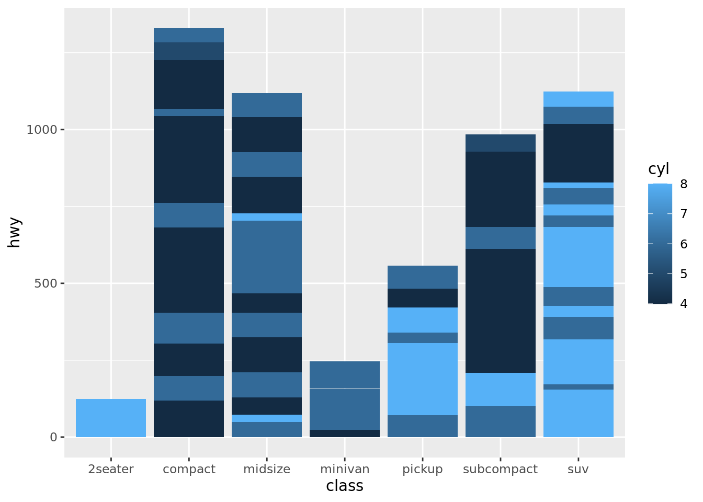
Aviso
Veja que no caso acima, o ggplot tentou automaticamente ajustar a escala de cores para uma escala contínua. Dá a impressão que temos veículos com 7 cilindros inclusive.
Isto é porque em nossos dados, a variável “cyl” é do tipo inteiro (integer) e com isto, o ggplot2 entende como um variável contínua.
Para obter o efeito pretendido, temos algumas opções. Uma seria mudar a variável cyl para o tipo fator (factor) usando a função as_factor(). Veja:
f + geom_col(aes(fill = as_factor(cyl)))
Por padrão, as classes são colocadas de forma empilhada, similar ao que vimos na geom_bar. Se quisermos colocadas lado a lado, devemos fazer:
f + geom_col(aes(y= hwy, x=class, fill = factor(cyl)), position = "dodge")
Dica
A largura das colunas é expandida automaticamente, pois não temos valores para todas as combinações. Por exemplo, não temos 8 cilindros em carros compatos. Há formas difrentes de ajutar isso, uma delas é ajustar a base de dados, criando as combinações possíveis utilização a função tidyr::complete()
complete(mpg, class, cyl) |> ggplot () +
geom_col(aes(y= hwy, x=class, fill = factor(cyl)), position = "dodge")
6.6.6.2 geom_boxplot
Use para criar um gráfico boxplot (box e whiskers). Este gráfico é bastante interessante, pois mostra cinco estatísticas automaticamente (a mediana, primeiro e terceiro quartis e os limites max e min) e os pontos fora da curva individualmente (outlyers).
Para este exemplo, iremos além de definir uma cor de preenchimento através do argumento fill = , iremos remover a legenda desta camada usando show.legend = FALSE.
f + geom_boxplot(aes(fill = factor(class)), show.legend = FALSE)
Para mostrar a média ao invés da media, podemos fazer:
f + geom_boxplot(aes(middle = mean(hwy)))6.6.6.3 geom_dotplot
Use para criar um gráfico de pontos, com a largura dos pontos correspondem à largura do agrupamento e os pontos são empilhados. Cada ponto corresponde à uma observação dos dados, portanto em geral é utilizado quando temos poucas observações.
f + geom_dotplot(aes(color = class),binaxis = "y", stackdir = "center")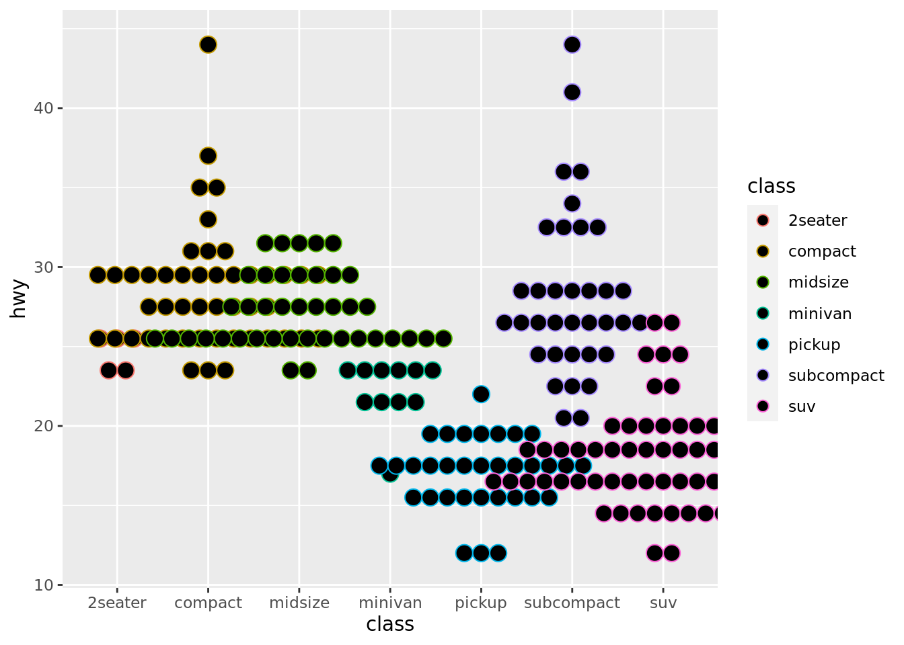
6.6.6.4 geom_violin
Use para criar um gráfico de violino. Ele mostra de forma compacta a distribuição de uma variável contínua.
f + geom_violin(aes(fill = class), scale = "area")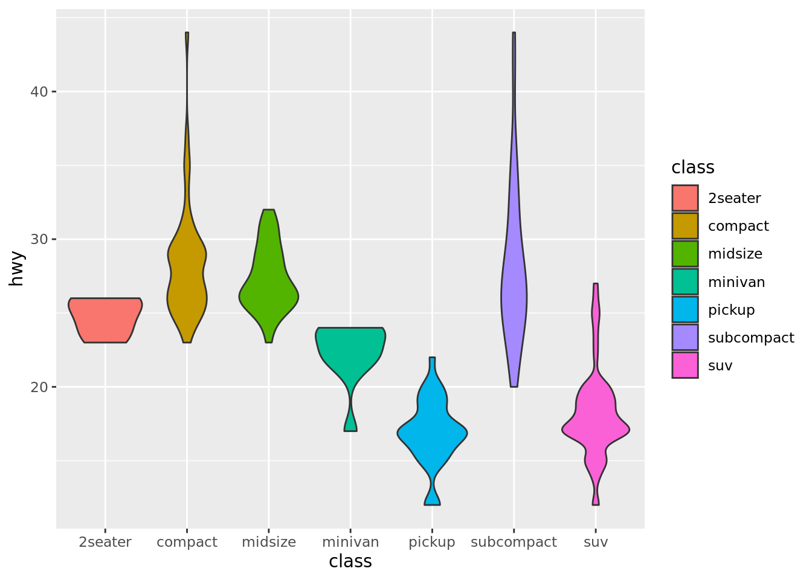
6.6.7 Duas Variáveis Contínuas
Quando precisamos analisar duas variáveis contínuas, as geometrias a seguir ajudam a fornecer um gráfico apropriado.
Novamente, iremos preparar nosso objeto básico para evitar repetição de código. Agora teremos um objeto “e” ao qual iremos adicionar novas camadas. Similar ao que fizemos anteriormente, só que agora usando a base de dados mpg. Utilizaremos as variáveis consumo na cidade (cty) e consumo na estrada (hwy).
e <- ggplot(mpg, aes(cty, hwy))6.6.7.1 geom_label
6.6.7.2 geom_point
6.6.7.3 geom_quantile
6.6.7.4 geom_rug
6.6.7.5 geom_smooth
6.6.7.6 geom_text
6.6.7.7
6.6.8 Duas Variáveis Distribuição Bivariada Contínua
6.6.9 Duas Variáveis Discretas
6.6.10 Mapas
6.6.11 Visualizando Erros
6.6.12 Três Variáveis
6.7 Estatísticas (stats)
6.8 Escalas (scales)
6.8.1 Escalas de Propósito Geral
6.8.2 Escalas de Localização X & Y
6.8.3 Escalas de Cor e Preenchimento
6.8.4 Variáveis Discretas
6.8.5 Variáveis Contínuas
6.8.6 Escalas de Forma e Tamanho
6.9 Sistema de Coordenadas
6.10 Ajuste de Posição
6.11 Temas
6.12 Facetas
6.13 Texto e Legendas
6.14 Zoom
Fávero, Belfiore, Luiz P. 2021. «Manual de Análise de Dados». Comput. J., dezembro.